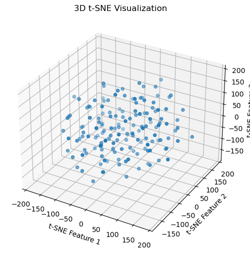

import json
import numpy as np
import pandas as pd
import matplotlib.pyplot as plt
from sklearn.metrics import silhouette_samples, silhouette_scoreDimensionality Reduction
Project Proposal
In this tab, I will try to use PCA and t-SNE method to reduce the dimension for better analyzing the mobile phone dataset.
Dimensionality introduction
In the field of machine learning, the dimensionality reduction refers to the use of some kind of projection method to project the data points in the original high-dimensional space to a lower dimensional space. By dimensionality reduction, we can reduce the error caused by redundant information and imporve the accuracy of recognition. Now, dimensionality has become part of data preparation process for future model training. Following are some main methods of dimensionality reduction.
Principle Component Analysis (PCA)
Principle Component Analysis is a commonly used linear dimensionality reduction method. One of its goals is to use fewer data dimensions so that most can represent the original dataset’s characteristics by using some linear projection from high-dimension data into low-dimension data in the mean while maximizing the variance of the data being projected. Here’s a simple example explaining this concept. For example, if you want to organize some photos of people, the two characteristics you really care about are race and gender. When trying to reorganize the photos, you should find what matters to you most, reorganize the photos by the order of characteristics you focus more on, and then create a new display of those photos. So, this is how PCA works. Following are some main processes we doing PCA:
- Standardization
- Covariance Matrix Computation
- Eigenvectors and Eigenvalues
- Choosing Principal Components
- Transforming Data
t-SNE
T-distributed stochastic Neighbor Embedding is a non-linear dimensionality reduction method that is used to form high-dimensional data in a low-dimensional environment. We aim to reduce the amount of complicated, multi-dimensional data regarding neighboring points (the “neighborhood”) to a more manageable format akin to what a distribution would use to express it. Method: Using these data points, we’ll model a random walk. Moving toward a nearby site during this process is more likely than to occur at a distant one. Lastly, we locate points in a space that is smaller in dimension. The neighborhood pattern around these locations ought to be very similar to the initial high-dimensional neighborhood distribution. 1
Tools
In this part, the library will include json, numpy, pandas, matplotlib, scikit-learn, sklearn.manifold.TSNE, etc.
Code
from sklearn.preprocessing import StandardScalerdf=pd.read_csv("../../../data/01-modified-data/after_clean_mobile_phone_rating.csv")x=df[['Launch Price','CAMERA','SELFIE','AUDIO','DISPLAY','BATTERY']]
y=df[['buying_intent']]
scaler = StandardScaler()
X = scaler.fit_transform(x)Dimensionality Reduction with PCA
# EIGEN VALUES/VECTOR
from numpy import linalg as LA
# w, v1 = LA.eig(cov)
w, v1 = LA.eig(np.cov(X.T))
print("\nCOV EIGENVALUES:",w)
print("COV EIGENVECTORS (across rows):")
print(v1.T)
COV EIGENVALUES: [2.46422101 1.21865397 0.24126397 0.958379 0.63183561 0.52512012]
COV EIGENVECTORS (across rows):
[[ 0.50024701 0.53945186 0.20733577 0.42438368 0.44295301 -0.19861426]
[ 0.39766903 0.19014289 -0.67810966 -0.25218719 -0.31386294 -0.42867702]
[-0.69792826 0.69118266 -0.15187461 -0.05535362 0.03015126 -0.09013136]
[ 0.21875576 0.21730996 -0.34121012 -0.27020298 0.26679962 0.8026869 ]
[-0.19511955 -0.26042618 -0.57511145 0.73310744 0.13997149 0.07946605]
[ 0.13631836 0.2829461 0.16412113 0.3778623 -0.78332594 0.34357475]]# PCA CALCULATION
from sklearn.decomposition import PCA
pca = PCA(n_components=6)
pca.fit(X)
print('\nPCA')
print(pca.components_)
PCA
[[-0.50024701 -0.53945186 -0.20733577 -0.42438368 -0.44295301 0.19861426]
[ 0.39766903 0.19014289 -0.67810966 -0.25218719 -0.31386294 -0.42867702]
[ 0.21875576 0.21730996 -0.34121012 -0.27020298 0.26679962 0.8026869 ]
[-0.19511955 -0.26042618 -0.57511145 0.73310744 0.13997149 0.07946605]
[ 0.13631836 0.2829461 0.16412113 0.3778623 -0.78332594 0.34357475]
[ 0.69792826 -0.69118266 0.15187461 0.05535362 -0.03015126 0.09013136]]# # PLOT
v2=pca.components_
fig = plt.figure()
ax = fig.add_subplot(projection='3d')
ax.scatter(X[:,0],X[:,1],X[:,2],marker=".", cmap="viridis")
v1=v1*1000
v2=v2*1000
ax.quiver(0,0,0,v1[0,0],v1[1,0],v1[2,0])
ax.quiver(0,0,0,v1[0,1],v1[1,1],v1[2,1])
ax.quiver(0,0,0,v1[0,2],v1[1,2],v1[2,2])
ax.quiver(0,0,0,v2[0,0],v2[1,0],v2[2,0])
ax.quiver(0,0,0,v2[0,1],v2[1,1],v2[2,1])
ax.quiver(0,0,0,v2[0,2],v2[1,2],v2[2,2])
plt.show()/var/folders/j3/s32rl54j1f76nvbcx9mxg4yc0000gn/T/ipykernel_92317/2939638508.py:5: UserWarning: No data for colormapping provided via 'c'. Parameters 'cmap' will be ignored
ax.scatter(X[:,0],X[:,1],X[:,2],marker=".", cmap="viridis")plt.figure(figsize=(8,4))
plt.plot(np.cumsum(pca.explained_variance_ratio_))
plt.xlabel('Number of Components')
plt.ylabel('Cumulative Explained Variance')
plt.axhline(y=0.95, color='red', linestyle='--', linewidth=2, label='95% explained variance')
cum_explained=np.cumsum(pca.explained_variance_ratio_)
optimal_components = np.where(cum_explained >= 0.95)[0][0]+1
plt.axvline(x=optimal_components, color='red', linestyle='--', linewidth=2, label=f'Optimal components: {optimal_components}')
plt.show()Obersvation
As shown, the cure is an upward shift along with the increase in the number of components. The first component explains more than 60% of the variance and the second component adds approximately 10% more to the explained variance, bringing the total to around 80%. However, the added contribution decreased when the number of components increased.
We want to determine the number of components that make 95% cumulative explained variance. Thus, I made a red line when cumulative explained variance=0.95, and as shown in the graph, the red line intersects the blue line at the number of components around = 4. So, when the number of components is larger than 4, we can make variance 95 % explained.
This means the number of components that can make 95% cumulative explained variance is 5.
Dimensionality Reduction with t-SNE
from sklearn.manifold import TSNE# 2D
tsne = TSNE(n_components=2, perplexity=30, learning_rate=200, n_iter=1000)
X_tsne = tsne.fit_transform(X)
plt.scatter(X_tsne[:, 0], X_tsne[:, 1])
plt.show()# 3D
tsne = TSNE(n_components=3, perplexity=30, learning_rate=200, n_iter=1000)
X_tsne = tsne.fit_transform(X)
fig = plt.figure(figsize=(8, 6))
ax = fig.add_subplot(111, projection='3d')
ax.scatter(X_tsne[:, 0], X_tsne[:, 1], X_tsne[:, 2])
ax.set_xlabel('t-SNE Feature 1')
ax.set_ylabel('t-SNE Feature 2')
ax.set_zlabel('t-SNE Feature 3')
plt.title('3D t-SNE Visualization')
plt.show()
#parameter tuning for t-SNE (perplexity)
perplexities = [5, 25, 50]
learning_rates = [10, 200, 500]
fig, axs = plt.subplots(len(perplexities), len(learning_rates), figsize=(15, 10))
for i, perplexity in enumerate(perplexities):
for j, learning_rate in enumerate(learning_rates):
tsne = TSNE(n_components=2, perplexity=perplexity, learning_rate=learning_rate, n_iter=1000)
X_tsne = tsne.fit_transform(X)
axs[i, j].scatter(X_tsne[:, 0], X_tsne[:, 1])
axs[i, j].set_title(f'Perplexity: {perplexity}, Learning Rate: {learning_rate}')
plt.show()Observation
Perplexity: This t-SNE parameter influences how well the local and global components of your data are balanced. Learning Rate: This variable also affects how well the algorithm matches the data. It can be represented as the size of the step that the algorithm uses to discover the representation. As shown in the graph: * Perplexity = 5 with learning rate increasing, the points become denser, which indicating a better balance between local and global perspective. * Perplexity = 25 with learning rate increasing, the points become denser. When the learning rate=200, the structure is more obvious. However when learning rate reach 500, the points are too dense, which may refelct the learning rate may be too high. * Perplexity = 50 with learning rate increasing, the points become denser as well, but not show the structure clearly, so it may not a good fit.
From the observation above, I believe the perplexity=25-50 and learning rate=20 might be the best balance for visualizing the data structure.
However, Compared to PCA, I think t-SNE is less practical to this dataset than PCA because the structure of pattern of t-SNE for this dataset is not so easy to recognize.
Project Report - Evaluation and comparasion
PCA
Strength:
PCA can be both used in the small, simple constructed dataset and large complicated dataset.
It reduce the noise in the dataset
preserve the global structure
works well with linear dimensionality reduction
Weakness:
does not involve hyperparameter tuning
Oversimplification of the data
loss of valuable information
t-SNE
Strength:
involve hyperparameters tuning
Preserves Local and Global Structure
Weakness:
When we are trying to reducing the dimension, the distance between points in low dimension are actually not match with the actual distance of the high dimension
In the high dimension, if the distance between points are large, but when we convert to low dimension, the distance may be smaller.
It is computationally intensive and may not scale well to extremely large datasets [1]
Conclusion
If the dataset is more linear and the dataset size is small, using PCA would be better.
If the dataset is not linear and the dataset size is large, using t-SNE would be better.
I think PCA is better to use in this dataset because from the plot of t-SNE, it’s really hard to recognize the pattern, but from the result of PCA, we can easily find out how many components we want to keep. So, this dataset may be more in a linear relationship. Also, my dataset is not large, so it’s better to use PCA over t-SNE.
In conclusion, when we are doing the dimensionality reduction process, it’s important to choose which method we’d like to use to avoid valuable information missing.
Footnotes
DSAN 5000 week-10 https://jfh.georgetown.domains/dsan5000/slides-and-labs/_site/content/slides/dimensionality-reduction/notes.html#t-distributed-stochastic-neighbor-embedding.↩︎